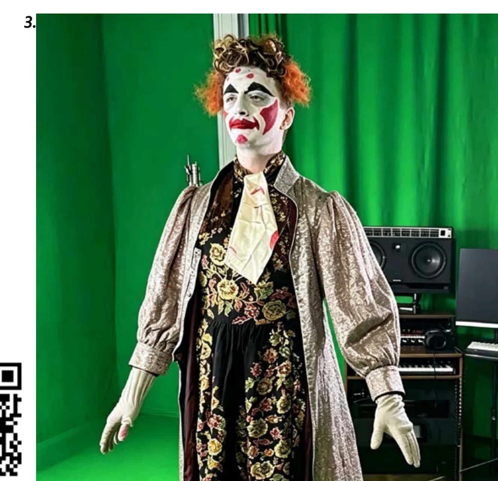
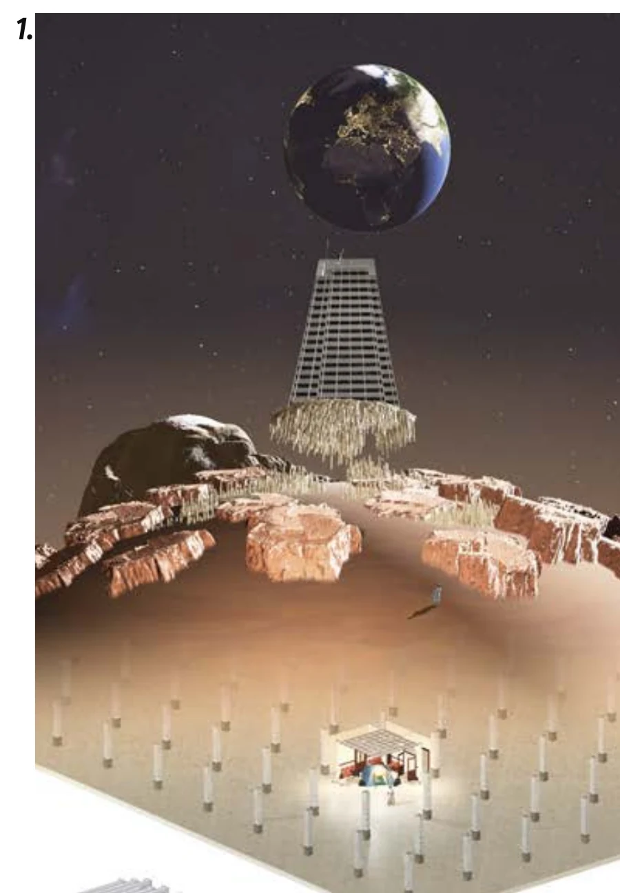
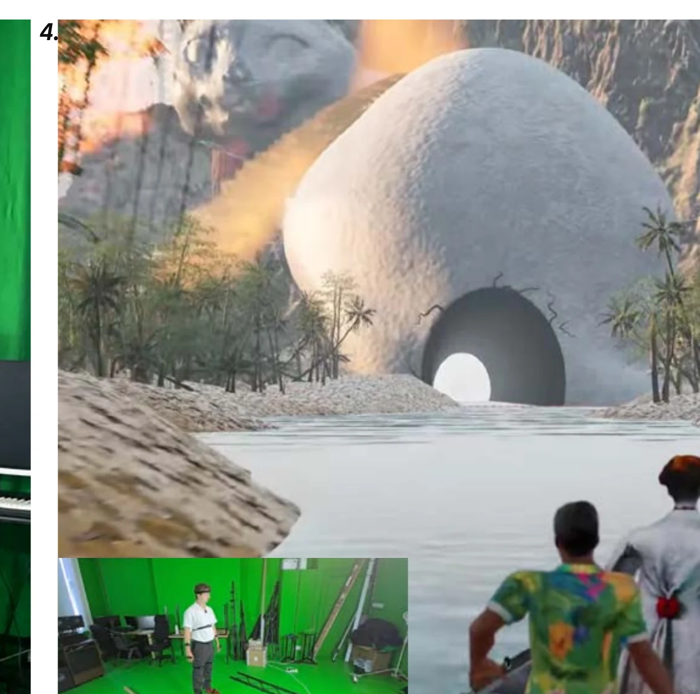
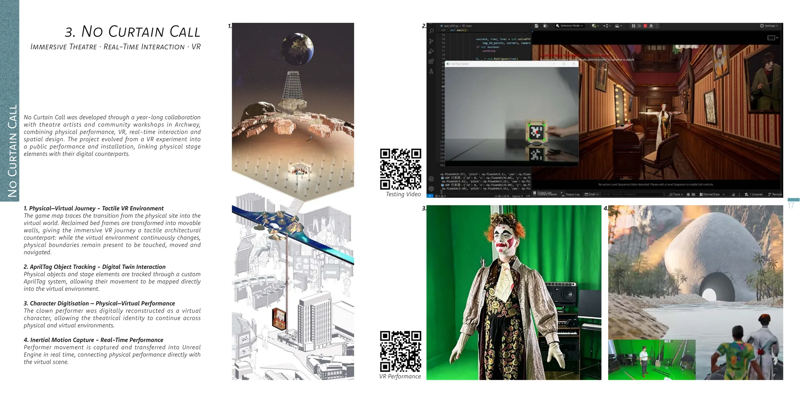

Character digitisationPhysical identity → virtual character
The clown performer was digitally reconstructed as a virtual character so the same theatrical identity could continue across physical and virtual environments.
Real-time performance,
across physical and virtual space.
A collaborative immersive-theatre project developed through community workshops in Archway, linking physical stage elements with their digital counterparts through VR, tracking and live performance capture.

No Curtain Call evolved from a VR experiment into a public performance and installation. The system connected a changing physical stage to a virtual environment rather than treating VR as a separate screen-based experience.

The game map traces the transition from the physical site into the virtual world. Reclaimed bed frames were transformed into movable walls, so while the virtual environment continuously changed, physical boundaries remained present to be touched, moved and navigated.
A custom AprilTag workflow tracked physical objects and stage elements, allowing their movement to be mapped directly into the virtual environment.
Stage elements carry visual markers.
Camera input estimates position and orientation.
Tracked motion is translated into the digital scene.
The virtual counterpart updates in real time.
Physical performance was extended into the digital environment through character digitisation and inertial motion capture, allowing the theatrical identity to continue across both spaces.

Character digitisationThe clown performer was digitally reconstructed as a virtual character so the same theatrical identity could continue across physical and virtual environments.

Inertial motion capturePerformer movement was captured and transferred into Unreal Engine in real time, directly connecting physical performance with the virtual scene.
The project was developed through a year-long collaboration with theatre artists and community workshops in Archway. Its technical components were not isolated demonstrations; they were assembled into an immersive public performance and installation.
